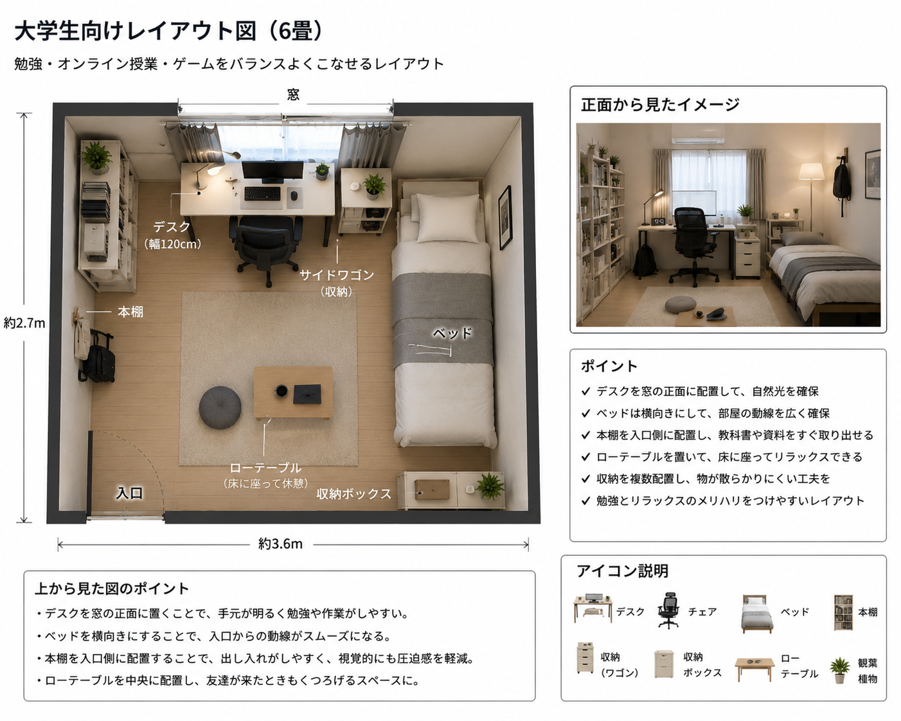

大学生向けレイアウト

概要
大学生の一人暮らしを想定した、勉強・オンライン授業・ゲームのすべてに対応できるレイアウトです。限られたスペースと予算でも快適に過ごせるよう、必要な家具だけを配置しています。
基本情報
| 部屋サイズ | 6畳 |
|---|---|
| 用途 | 勉強・レポート・ゲーム・動画視聴 |
| 予算 | 約80,000円～150,000円（PC本体除く） |
| デスクサイズ | 幅120cm × 奥行60cm |
| 再現難易度 | ★☆☆☆☆ |
レイアウト図

必要なもの
- 幅120cmデスク
- オフィスチェア
- ノートPCまたはデスクトップPC
- デスクライト
- マウス
おすすめポイント
- 初期費用を抑えられる
- 家具が少なく部屋が広く見える
- 一人暮らしの6畳でも再現しやすい
初心者向けアドバイス
最初から高価な周辺機器をそろえる必要はありません。まずはデスク・チェア・モニターを優先し、必要に応じてモニターアームや収納用品を追加すると、費用を抑えながら快適な環境を作ることができます。